Thirteen engravings, between 1514 and 1891, with a question on the back of each one.
It asks. It does not answer. There are no reversals, no yes, no no, and nothing in here about what is going to happen to you — a deck on a Disabled people’s site that told somebody how their life was going to go would be doing the exact thing the rest of these pages exist to refuse. The build refuses a card that tries.
Cut the deck
One card, at random, from the thirteen below. Draw as many as you like; there is no spread, no position and no meaning attached to the order. If it hands you something that is not useful, that is allowed — put it back.
The deck is face down. Nothing is shuffled until you ask for it.
The whole deck
Every card, face up, in the order they were cut — oldest plate first. Nothing on this page is behind the draw: a room that made somebody gamble to reach its contents would have put its contents behind chance, which is the “lite version” mistake holding a deck.
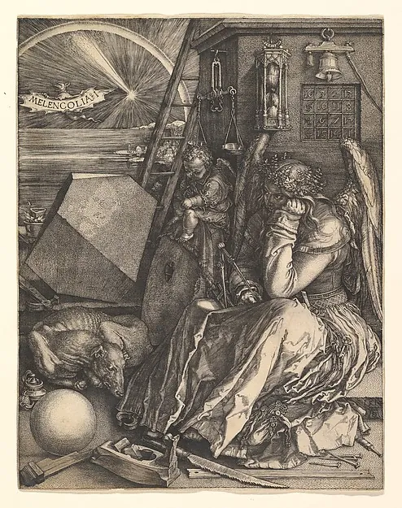
The Melancholy
What have you been calling laziness?
She is surrounded by every instrument she knows how to use and she is not using any of them. Five centuries before anybody wrote the word, this is a picture of a person who has run out.
Albrecht Dürer (German, Nuremberg 1471–1528 Nuremberg), Melencolia I, 1514. Engraving. Harris Brisbane Dick Fund, 1943, 43.106.1. The Metropolitan Museum of Art · public domain.
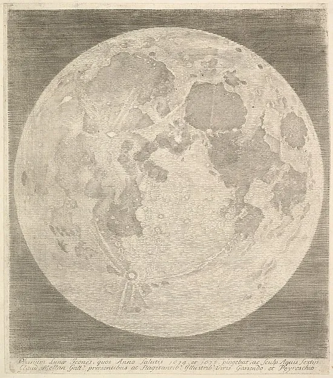
The Full Moon
What is lit whether or not you are ready to look at it?
Mellan cut the whole face in a single spiralling line that starts at the nose and never lifts. It is the most technically insane thing in this deck and it is a picture of something everybody has already seen.
Claude Mellan (French, Abbeville 1598–1688 Paris), Full Moon, 1635. Engraving; first state of two (BN). The Elisha Whittelsey Collection, The Elisha Whittelsey Fund, 1960, 60.634.36. The Metropolitan Museum of Art · public domain.
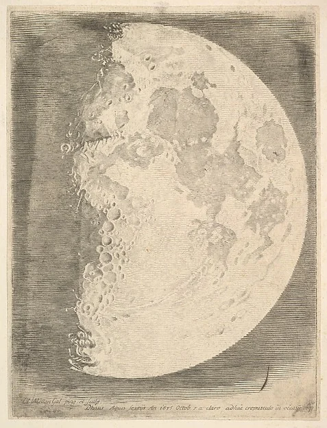
The Waxing Moon
What is coming back that you had written off?
Half of it is missing and half of it is arriving. Both of those are true of the same object on the same night.
Claude Mellan (French, Abbeville 1598–1688 Paris), The Moon in its First Quarter, 1635. Engraving; first state of two (BN). The Elisha Whittelsey Collection, The Elisha Whittelsey Fund, 1960, 60.634.38. The Metropolitan Museum of Art · public domain.
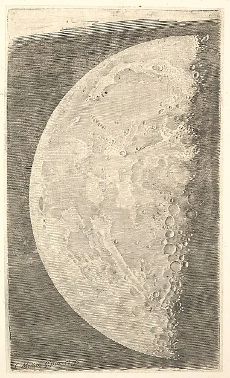
The Waning Moon
What are you allowed to have less of?
Waning is not failing. It is the same body doing the other half of the only thing it does.
Claude Mellan (French, Abbeville 1598–1688 Paris), The Moon in its Final Quarter, 1635. Engraving; first state of two. The Elisha Whittelsey Collection, The Elisha Whittelsey Fund, 1960, 60.634.37. The Metropolitan Museum of Art · public domain.
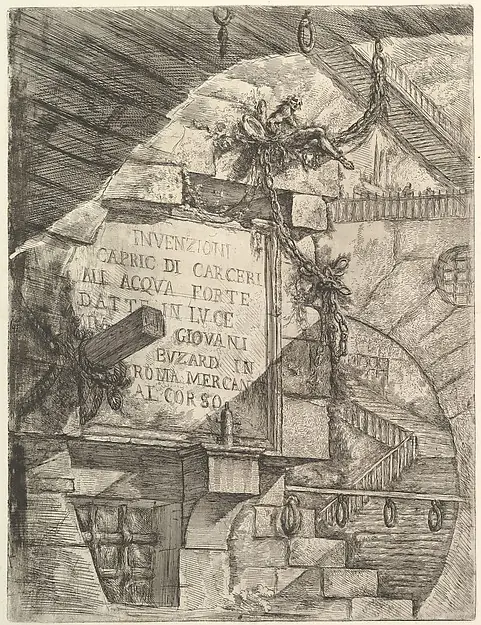
The Threshold
What have you not opened yet?
A title page is a door with writing on it. Piranesi's opens onto a set of prisons that do not exist, never connect to each other, and were etched by a man who described himself on it as an architect.
Giovanni Battista Piranesi (Italian, Mogliano Veneto 1720–1778 Rome), Title Page, from "Carceri d'invenzione" (Imaginary Prisons), ca. 1749–50. Etching, engraving, sulphur tint or open bite; first state of nine (Robison). Harris Brisbane Dick Fund, 1937, 37.45.3(21). The Metropolitan Museum of Art · public domain.
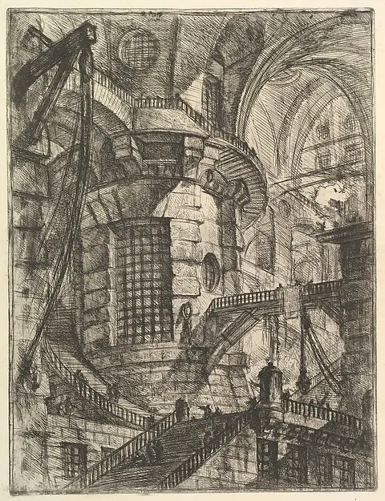
The Tower
Who told you the only way out was up?
Every staircase in this picture leads somewhere, and no two of them agree about where. The architecture is not solvable and was never meant to be.
Giovanni Battista Piranesi (Italian, Mogliano Veneto 1720–1778 Rome), The Round Tower, from "Carceri d'invenzione" (Imaginary Prisons), ca. 1749–50. Etching, engraving, sulphur tint or open bite, burnishing; first state of four (Robison). Harris Brisbane Dick Fund, 1937, 37.45.3(27). The Metropolitan Museum of Art · public domain.
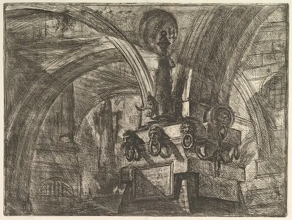
The Lamp
Who is keeping a light on for you?
One lamp, in a building the size of a weather system, put there by somebody. It does not light the room. It was not going to.
Giovanni Battista Piranesi (Italian, Mogliano Veneto 1720–1778 Rome), The Pier with a Lamp, from "Carceri d'invenzione" (Imaginary Prisons), ca. 1749–50. Etching, engraving, sulphur tint or open bite, burnishing; first state of seven (Robison). Harris Brisbane Dick Fund, 1937, 37.45.3(29). The Metropolitan Museum of Art · public domain.
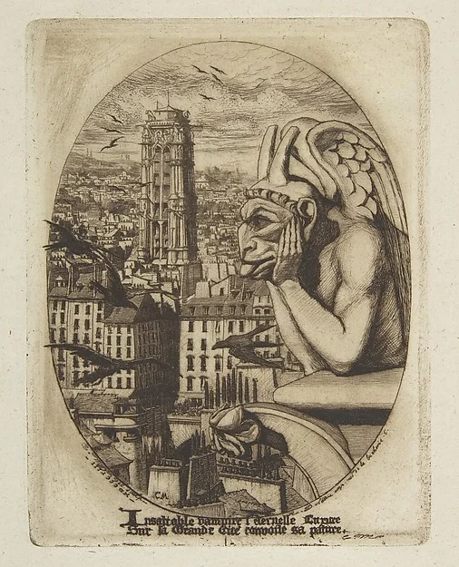
The Watcher
What have you looked at so long that it has started looking back?
Meryon called this one The Vampire. It has been up there since the restoration, resting its chin on its hands and watching the city get on with it, and it is the closest thing this library has to a colleague.
Charles Meryon (French, 1821–1868), The Vampire, 1853. Etching in brown ink on green laid paper; fifth state of ten. H.O. Havemeyer Collection, Bequest of Mrs. H.O. Havemeyer, 1929, 29.107.108. The Metropolitan Museum of Art · public domain.
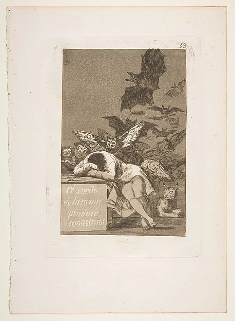
The Sleep
What did you decide while you were exhausted?
The lettering on the desk says the sleep of reason produces monsters. The lynx is the detail nobody mentions: something in the picture is still awake.
Goya (Francisco de Goya y Lucientes) (Spanish, Fuendetodos 1746–1828 Bordeaux), Plate 43 from "Los Caprichos": The sleep of reason produces monsters (El sueño de la razon produce monstruos), 1799. Etching, aquatint. Gift of M. Knoedler & Co., 1918, 18.64(43). The Metropolitan Museum of Art · public domain.
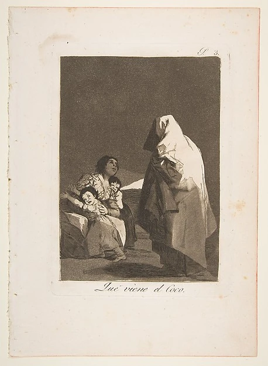
The Bogey
Who taught you to be frightened of that?
Goya's own note on this plate is contemptuous of the parent, not the ghost: a child taught to fear a thing that is not there grows into an adult who can be frightened by anybody holding a sheet.
Goya (Francisco de Goya y Lucientes) (Spanish, Fuendetodos 1746–1828 Bordeaux), Plate 3 from "Los Caprichos": Here comes the bogey-man (Que viene el Coco), 1799. Etching, burnished aquatint. Gift of M. Knoedler & Co., 1918, 18.64(3). The Metropolitan Museum of Art · public domain.
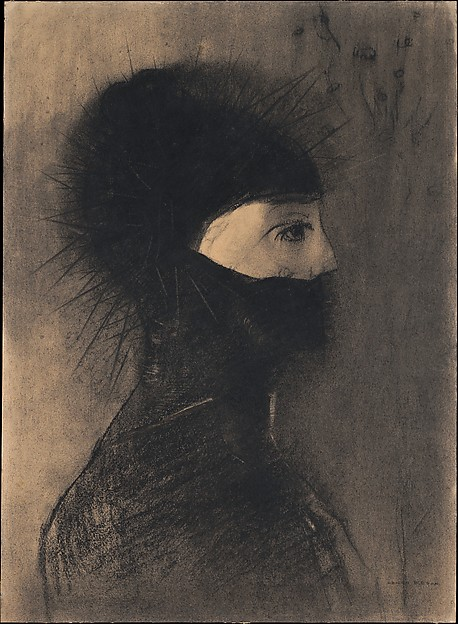
The Armour
What are you still wearing indoors?
It is drawn in charcoal, which means the armour is made of dust. Redon spent twenty years on what he called his blacks before he allowed himself any colour at all.
Odilon Redon (French, Bordeaux 1840–1916 Paris), Armor, 1891. Charcoal and conté crayon. Harris Brisbane Dick Fund, 1948, 48.10.1. The Metropolitan Museum of Art · public domain.
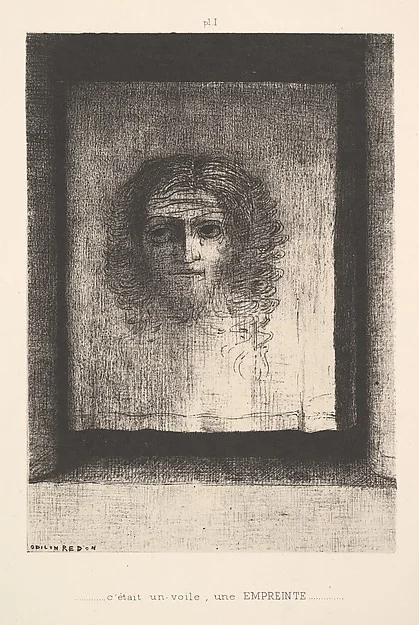
The Veil
What are you not saying out loud yet?
Something is there and it is not resolving. Redon's whole argument was that a picture is allowed to do that, and refused to explain any of them.
Odilon Redon (French, Bordeaux 1840–1916 Paris), A Veil, a Printed Image, 1891. Lithograph. Rogers Fund, 1920, 20.30.1. The Metropolitan Museum of Art · public domain.
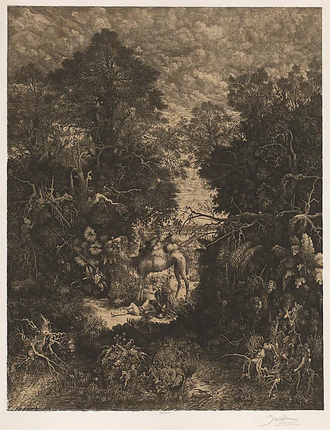
The Thicket
Who stopped for you?
The parable is in there. So is everything else — Bresdin filled the whole plate with undergrowth until the act of kindness became something you have to look for, which is a fair description of how it usually works.
Rodolphe Bresdin (French, Montrelais 1822–1885 Sèvres), The Good Samaritan, 1861. Lithograph; early impression of first state (Van Gelder). Rogers Fund and the Elisha Whittelsey Collection, The Elisha Whittelsey Fund, 1979, 1979.573. The Metropolitan Museum of Art · public domain.
Where the pictures came from
Every plate is a public domain work in the Metropolitan Museum of Art’s Open Access collection, which releases images of public domain works under CC0. One collection rather than thirteen scrapbook sources, because that is what lets this page make a single rights statement somebody could actually check — and the build refuses a plate whose object page is anywhere else. CC0 asks for nothing; Dürer, Mellan, Piranesi, Meryon, Goya, Redon and Bresdin are named on every card anyway, which is this street’s habit and not their requirement. The card names, the questions and the notes are ours. It is all collected in the liner notes.
HOW LOUD DO YOU WANT IT?
Starts wherever your device says. There is no ambient layer in this room at any setting: thirteen rectangles on a plain ground do not need one, and a deck that moved while you were reading it would be a different and much worse object.
Job marker — a lozenge cut out of a rule
You have found a job marker. The Adventurer’s Guild is a shopfront on the street, and it posts jobs that send you round these rooms. Take the code below to its board and that job is done. Nothing here is scored, nothing expires, and one is a perfectly good number of jobs to do.
The job: A deck that will not answer
Before the code: Look at the back of any card. Every one of them ends the same way and does the same thing. One word.
Hint 1
Look at the punctuation at the end of a card.
Hint 2
It is the opposite of telling you what is going to happen.
Last hint
Three letters.
Give me the answer
The answer is Ask. Every card ends in a question mark, and the tool refuses one that does not, plus the whole vocabulary of prediction. There are no reversals, no spread and no positions — nothing that could be assembled into a statement about somebody's life.
Taking the answer is a real way through this, not a lesser one. Nothing is watching and nothing is written down.
Every card ends in a question mark, and the tool refuses one that does not, plus the whole vocabulary of prediction. There are no reversals, no spread and no positions — nothing that could be assembled into a statement about somebody's life.